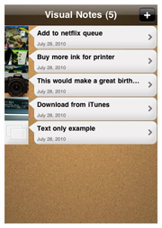
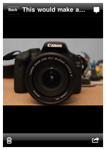
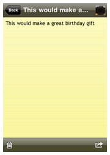
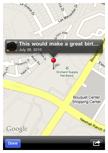

Have you ever seen something that inspired an idea, seen something in a shop and wanted to remember it, or needed to capture the contents of a whiteboard/blackboard for future reference? Then Visual Notes is the application for you.
Visual Notes makes it easy to create location aware notes using the camera, photo library, or keyboard. Notes are geo-tagged using the iPhone's built-in Location technology allowing you see when and where they were created. The intuitive and easy-to-use interface makes it easy to manage all of your photo and text notes in one place and remove the clutter from your photo library.
